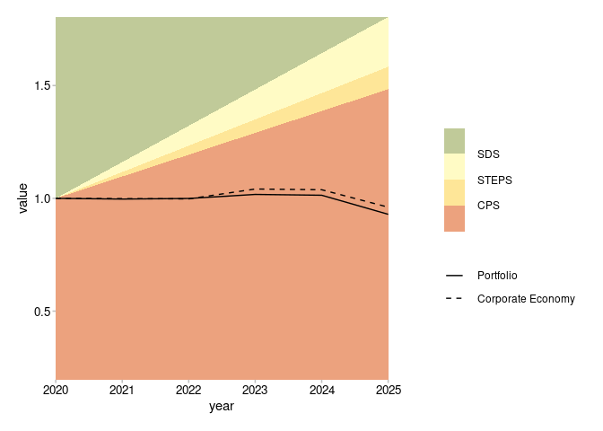
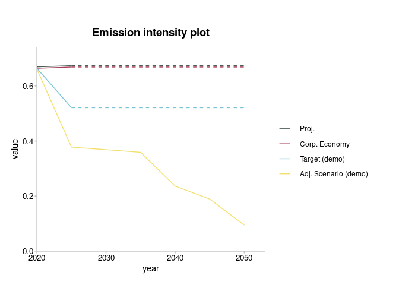
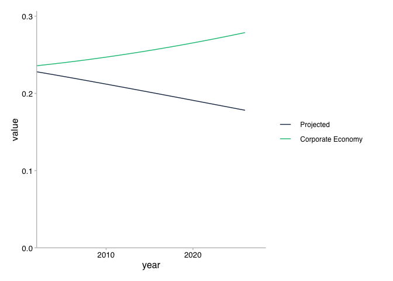
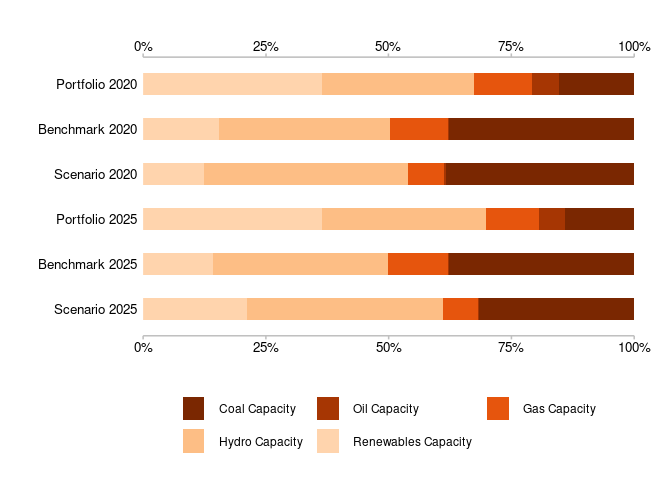
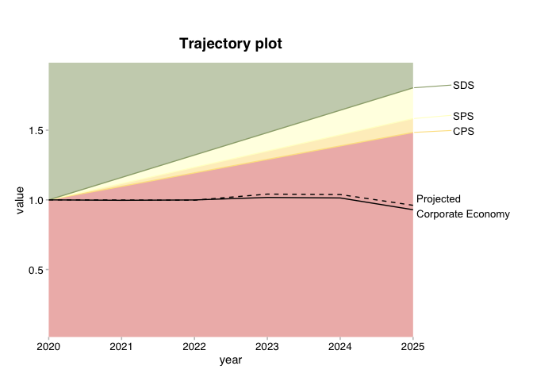

The goal of r2dii.plot is to help you plot 2DII data in an informative, beautiful, and easy way.
Installation
You can install the development version of r2dii.plot from GitHub with:
# install.packages("devtools")
devtools::install_github("2DegreesInvesting/r2dii.plot")Example
The r2dii.plot package is designed to work smoothly with other “r2dii” packages – r2dii.data, r2dii.match, and r2dii.analysis. It also plays well with the ggplot2 package, which helps you customize your plots.
library(ggplot2, warn.conflicts = FALSE)
library(r2dii.plot)Your data typically comes from the output of two functions in the r2dii.analysis package: target_sda() and target_market_share(). Here you’ll use two example datasets that come with r2dii.plot.
sda
#> # A tibble: 208 x 4
#> sector year emission_factor_metric emission_factor_value
#> <chr> <dbl> <chr> <dbl>
#> 1 automotive 2002 projected 0.228
#> 2 automotive 2003 projected 0.226
#> 3 automotive 2004 projected 0.224
#> 4 automotive 2005 projected 0.222
#> 5 automotive 2006 projected 0.220
#> 6 automotive 2007 projected 0.218
#> 7 automotive 2008 projected 0.216
#> 8 automotive 2009 projected 0.214
#> 9 automotive 2010 projected 0.212
#> 10 automotive 2011 projected 0.210
#> # … with 198 more rows
market_share
#> # A tibble: 1,170 x 8
#> sector technology year region scenario_source metric production
#> <chr> <chr> <int> <chr> <chr> <chr> <dbl>
#> 1 automotive electric 2020 global demo_2020 projected 145942.
#> 2 automotive electric 2020 global demo_2020 corporate_econ… 8134869.
#> 3 automotive electric 2020 global demo_2020 target_cps 145942.
#> 4 automotive electric 2020 global demo_2020 target_sds 145942.
#> 5 automotive electric 2020 global demo_2020 target_sps 145942.
#> 6 automotive electric 2021 global demo_2020 projected 148212.
#> 7 automotive electric 2021 global demo_2020 corporate_econ… 8183411.
#> 8 automotive electric 2021 global demo_2020 target_cps 148361.
#> 9 automotive electric 2021 global demo_2020 target_sds 160625.
#> 10 automotive electric 2021 global demo_2020 target_sps 149016.
#> # … with 1,160 more rows, and 1 more variable: technology_share <dbl>r2dii.plot supports three kinds of plots – timeline, techmix, and trajectory. For each kind, you’ll need to subset the specific rows you want to plot. For details see the documented “Requirements” of the argument data of each plot_*() function (e.g. see ?plot_timeline). If you forget to meet the data requirements the error message should guide you.
Timeline
Use plot_emission_intensity() with sda-like data. Try an intuitive, naive call.
plot_emission_intensity(sda)
#> Error: `sda` must have a single value of `sector` but has: automotive, aviation, cement, oil and gas, shipping, coal, steel.
#> Pick one value, e.g. 'automotive', with:
#> subset(sda, sector == 'automotive')The error message guides you to subset a single value of sector. Try “cement”.
data <- subset(sda, sector == "cement")
plot_emission_intensity(data)
Great! You can now polish your plot. Your options are limitless but these are some typical things you may do:
- Extrapolate the timeline.
- Add a title.
- Customize the legend labels with
ggplot2::scale_colour_manual().
data <- subset(sda, sector == "cement")
plot_emission_intensity(data, extrapolate = TRUE) +
labs(title = "Timeline plot") +
scale_color_manual(
values = c("#4a5e54", "#a63d57", "#78c4d6", "#f2e06e"),
labels = c("Proj.", "Corp. Economy", "Target (demo)", "Adj. Scenario (demo)")
)
#> Scale for 'colour' is already present. Adding another scale for 'colour',
#> which will replace the existing scale.
Techmix
Use plot_techmix() with market_share-like data.
data <- subset(
market_share,
metric %in% c("projected", "corporate_economy", "target_sds") &
sector == "power" &
region == "global"
)
plot_techmix(data) +
labs(title = "Techmix plot")
These are some tweaks you may consider:
- Subset a custom time range (instead of the default, full range in the data).
- Set custom colours and legend labels with
ggplot2::scale_color_manual().
data <- subset(
market_share,
metric %in% c("projected", "corporate_economy", "target_sds") &
sector == "power" &
region == "global" &
year >= 2020 & year <= 2025 # custom time range
)
plot_techmix(data) +
scale_fill_manual(
values = c("black", "brown", "grey", "blue", "green4"),
labels = paste(c("Coal", "Oil", "Gas", "Hydro", "Renewables"), "Cap.")
)
#> Scale for 'fill' is already present. Adding another scale for 'fill', which
#> will replace the existing scale.
Trajectory
Use plot_trajectory() with market_share-like data.
data <- subset(
market_share,
sector == "power" &
region == "global" &
technology == "renewablescap" &
year <= 2025
)
plot_trajectory(data) +
labs(title = "Trajectory plot")
#> Normalizing `production` values to the start year.